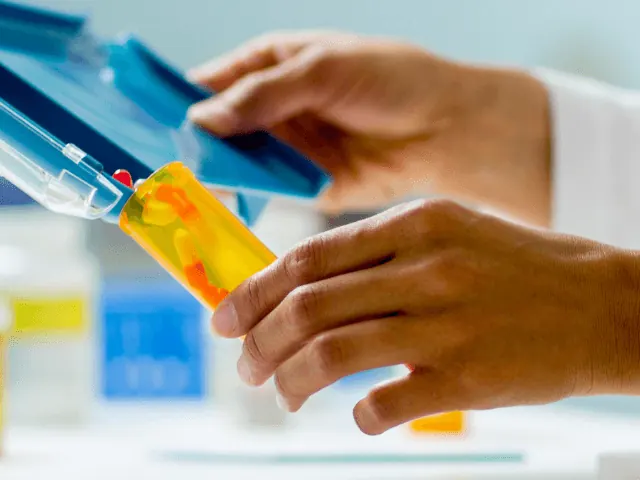

Op zoek naar een apotheek in Nijmegen? Hier vind je ze!
Gepubliceerd op 5 december 2022, bijgewerkt op 20 februari 2024

Met ruim 177.000 inwoners telt de stad Nijmegen zo’n 25 apotheken. Of je nu inwoner bent, een student of een toerist, er zal zich altijd een moment aandienen dat je gebruik moet maken van de diensten van een apotheek. De medewerkers in deze apotheken weten alles over medicijnen. Daarnaast bewaken ze jouw veiligheid door te controleren of medicijnen met elkaar samen kunnen en informeren zij over bijwerkingen. Met al je vragen over gezondheid en medicijnen kun je terecht bij één van de 25 apotheken. Dit kan zonder afspraak en de gehele dag door. Ben je niet goed op de hoogte waar je een apotheek kunt vinden in Nijmegen? Hieronder zie je een overzicht van de meest bekende in de stad.
Apotheek Nijmegen centrum
In het bruisende hart van Nijmegen is van alles te doen. Naast winkels, bioscopen, hotels en restaurants kan hier natuurlijk een grote apotheek niet ontbreken. Een plek waar veel mensen samenkomen én welke goed bereikbaar is. Aan de Lange Hezelstraat 20 vind je de BENU apotheek ‘t Weeshuis. Bij deze apotheek is een winkelbezoek mogelijk en is er zelfs wekelijks een inloopspreekuur. Iedere dinsdag kun je tussen 09.00 en 10.00 uur al je vragen over jouw medicijnen aan een apotheker stellen. In de meeste gevallen krijg je van de huisarts een recept. In de BENU apotheek kun je echter ook terecht voor zelfzorgmiddelen of receptvrije medicijnen. Deze kun je op eigen kosten aanschaffen in de apotheek of bestellen in de BENU webshop.
Weekend apotheek Nijmegen
Pijn of ander ongemak kent geen werkdagen of weekenden. Op de meest vreemde momenten kun je medicijnen of andere middelen nodig hebben van een apotheek. Gelukkig is dat in Nijmegen prima geregeld. Is het weekend of midden in de nacht? Maak dan gebruik van de openbare apotheek van het Radboud UMC. Iedereen kan 24 uur per dag en zeven dagen in de week terecht bij de openbare Radboud Apotheek. Je kunt deze apotheek bereiken via de hoofdingang van gebouw A van het Radboud UMC. De apotheek is te vinden op verdieping 0 en hiervoor volg je route 641. Mocht je slecht ter been zijn of kun je door andere omstandigheden niet zelf naar de apotheek komen? Maak dan gebruik van het Apotheek Service Team. Zij bezorgen jouw medicatie gratis thuis.
Apotheek Nijmegen Dukenburg
Aan de Meijhorst 1003A vind je in gezondheidscentrum de Schakel Service Apotheek Dukenburg. Deze apotheek is net als alle andere, maar de naam geeft al aan dat ze net dat beetje extra geven. Service; omdat het draait om jouw gezondheid. De medewerkers in deze apotheek staan voor alles en iedereen klaar. Ook zonder afspraak ben je altijd welkom. Extra handig is dat je in de Service Apotheek App altijd jouw medicijngebruik kunt inzien. Inloggen op deze app gaat veilig via je eigen DigiD. En ben je niet in de gelegenheid om binnen de openingstijden jouw medicijnen op te halen? Maak dan gebruik van het automatisch afhaalsysteem. Met deze gratis service kun je 24 uur per dag en zeven dagen in de week op het door jou gekozen moment jouw medicijnen ophalen bij het afhaalautomaat.

Apotheek Nijmegen Oost
Met ruim 12.000 patiënten die jou voorgingen is Apotheek Nijmegen Oost een zeer gerenommeerde apotheek. Je kunt deze apotheek vinden aan de Berg en Dalseweg 63. Voorheen was dit de Traianus apotheek, welke opgericht is in 1910. Absolute meerwaarde van deze apotheek is dat er dag en nacht iemand aanwezig is voor al jouw farmaceutische vragen. Het team van deze apotheek bestaat uit ervaren apothekers en assistenten, en het bewaken van de medicatieveiligheid staat hoog bij hen in het vaandel. Ook bij Apotheek Nijmegen Oost is het mogelijk om 24 uur per dag en zeven dagen per week je medicijnen op te halen bij een medicijnautomaat. Indien je niet in staat bent om zelf naar de apotheek te komen, is er een bezorgdienst beschikbaar.
Openingstijden Apotheken in Nijmegen
Liggen er medicijnen voor je klaar in de apotheek? Dan is het natuurlijk prettig om te weten wanneer je deze kunt ophalen. Hieronder vind je een overzicht met de openingstijden van de bovengenoemde apotheken:
BENU apotheek ’t Weeshuis
Maandag tot en met vrijdag van 08.00 tot 17.30 uur. Deze apotheek is op zaterdag en zondag gesloten.
Radboud apotheek
Deze apotheek is 24/7 open. Hier kun je dus altijd terecht.
Apotheek Nijmegen Dukenburg
Maandag tot en met vrijdag van 08.15 tot 17.30 uur. Deze apotheek is op zaterdag en zondag gesloten.
Apotheek Nijmegen Oost
Maandag tot en met vrijdag van 08.00 tot 17.30 uur. De medewerkers lunchen van 13.00 tot 13.30 uur. Deze apotheek is op zaterdag en zondag gesloten.
Wil je 24 uur per dag en zeven dagen per week gebruik kunnen maken van de diensten van een apotheek, kies dan voor een apotheek met een medicijnautomaat.